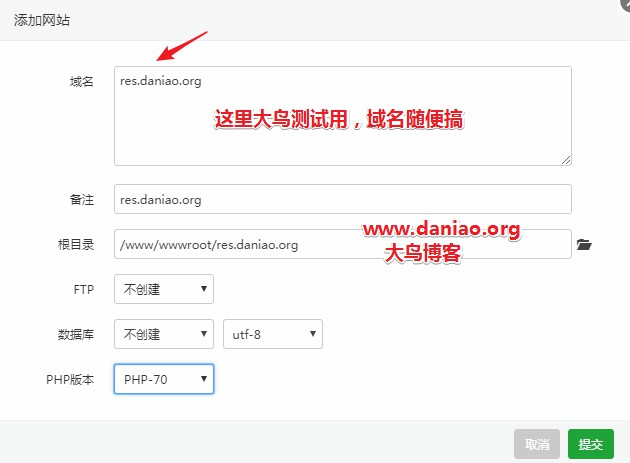
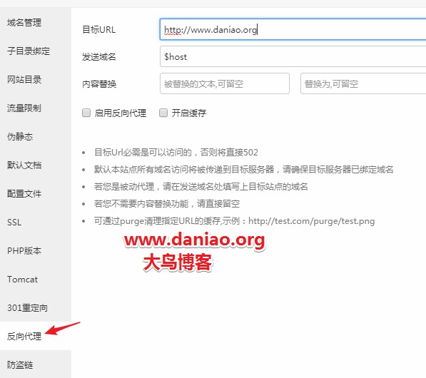
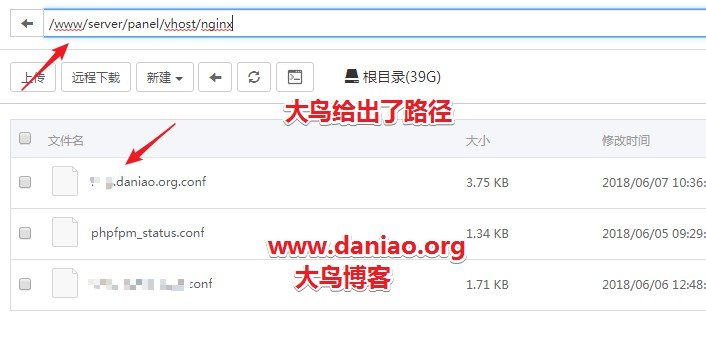
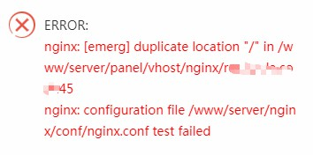

今天说的还是Bt(宝塔面板)方面的教程，我们都知道，利用wordpress建站，很方便，而且wordpress优化起来也很方便，相关的教程网上搜索下还是有很多的！我们用wordpress建好站点之后，首要的就是要给wordpress做优化，大鸟前面也有讲过教程。这里大鸟在简单的说一下！
首页、你要安装缓存插件，比如说wp super cache、memcached+Batcache、Redis+Redis Object Cache 、Nginx ngx_cache_purge+Nginx Helper，这么几个最常用的网站缓存加速的方法的组合。当然这些方法大鸟也都写过教程，下面我都罗列出来，如果有需求，可以去研究一下。
- memcached+Batcache→bt(宝塔)面板安装wordpress、启用memcached、Batcache让你的博客飞起来
- Redis+Redis Object Cach→Bt（宝塔面板）安装wordpress并开启Redis加速
- Nginx ngx_cache_purge+Nginx Helper→Wdcp v3,v2启用Nginx fastcgi_cache缓存加速提高wordpress访问速度
大鸟推荐的是memcached+Batcache因为最简单，也最实用，也最好操作，大神水煮鱼也是推荐用memcached+Batcache这个组合来加速我们的wodpress！
这些如果你选择一个做了，你会发现网站瞬间变的很快，如果我们用测速网站测试一下，会发现网站响应一片绿色，但是如果紧紧这样做个优化就放任不管，也是不够的，如果网站做大了一点，我们还要给wordpress网站做一个动静分离。当然，你可以选择七牛或者是又拍云来处理网站的静态资源！
当然如果你不想这么做，可以看看大鸟分享的这篇文章，我们用最简单经济的方法来实现动静分离。毕竟大部分站长都是苦逼草根，能省一点就省一点吧，说了这么多最后就是想说，如何利用一台vps来实现偷懒的动静分离加速方法！
第一：动静分离的简单优点
安装Bt(宝塔面板)，然后安装wordpress，然后开启安装memcached+Batcache这一整套的操作，大鸟就不去详解了，因为都有配套的教程，大家可以仔细研究一下。我们这里直接开始动静分离。
首页说下原理，我们的网站简单来说分为 2 种数据资源，一种是动态的数据，即 PHP 等程序语言实时吐出来的数据，在网页内容上主要是 HTML 代码，另一种则是静态资源，比如图片、css、js、视频……
那动静分离是什么样子的呢，大鸟举个列子，我们访问网站的时候，发现主域名是www.xxx.com，但是打开源代码的时候，发现图片啊，css等等这些都是img.xxx.com这种形式的，额，看起来是不是很专业，大鸟也是很羡慕啊。如果我们单独给img.xxx.com这个静态的资源域名加个cdn会不会很牛叉，网站速度肯定要飞起来了。
1、因为这种静态二级域名，接入 CDN 之后，CDN 配置更加比较简单，完全不用考虑缓存规则的问题，因为直接设置成全部缓存就好了！简单粗暴。
2、大鸟用一台服务器实现动静分离，节省成本。毕竟苦逼站长很多。
3、解决主站直接使用一级域名带来的 cookies“污染”，即静态资源不会再带上主站的 cookies 数据，减小了体积。
第二：新建一个网站然后反代到主站
额，我都说的有点乱了，下面看看如何实现吧。因为我们安装的Bt(宝塔面板)所以我们要在服务器上利用反向-代-理新增了一个新网站，内容则是反向-代-理了我们的主站，从而实现了 2 个域名共享相同的网站数据。就是说如果我的主站是www.xxx.com,然后我新增一个res.xxx.xom的二级域名，这个二级域名反向-代-理到我的主域名上，Bt(宝塔面板)来实现反代也是非常简单的，我们看看如何实现！
1、同服务器新建一个二级域名的网站

我们提交就可以了，这样我们就新建好了一个二级域名的网站，然后用这个站方向代理到我们的主站上面！
2、反向-代-理的部署
Bt(宝塔面板)来操作方向代理也是很简单，我们来看一下！
目标url这里填写我们的主域名，反向-代-理那个要选中！也可以开启缓存，也可以不开启，这个随意！
第三：反向-代-理的网站部署vhost
反向-代-理做好之后，我们开始部署这个二级域名的vhost，不然无法开启动静分离，如何操作呢，请往下面看！
1、找到res.daniao.org 的conf配置文件
我们要编辑res.daniao.org.conf的配置文件，但是这个文件在哪里呢，我们找找看！我们可以在网站设置里面可以编辑，可是画面太小，不好操作啊，大鸟还是找到源文件操作比较好！
2、res.daniao.org.conf的源文件

大鸟的res.daniao.org已经找到，我们在这里打开编辑！
第四：开始真正的部署之旅
我擦，啰嗦这么多，要开始了么，是的这下开始了，我们现在开始编辑res.daniao.org这个conf配置文件。大鸟给出代码，直接复制即可！
server
{
listen 80;
server_name img.daniao.org;
index index.php index.html index.htm default.php default.htm default.html;
root /www/wwwroot/www.daniao.org;
#从这里复制图片等静态资源请求代理到本地主站（关键配置）
location ~* .*\.(js|css|png|jpeg|jpg|bmp|ico|ogg|ogv|svg|svgz|eot|otf|woff|woff2|mp4|ttf|rss|atom|zip|tgz|gz|rar|bz2|doc|xls|exe|ppt|tar|mid|midi|wav|bmp|rtf)$ {
add_header Access-Control-Allow-Origin *; #解决字体跨站问题
add_header Access-Control-Allow-Headers X-Requested-With;
add_header Access-Control-Allow-Methods GET,OPTIONS;
proxy_pass http://127.0.0.1; # 如果是启用了https的网站，这里最好改成 https://127.0.0.1,避免主站加了非https协议的跳转配置，导致不成功。
proxy_set_header X-Forwarded-For $remote_addr;
proxy_redirect off;
proxy_set_header Host www.daniao.org; # 这里改为实际主站域名（必须）
expires max; # 设置浏览器304缓存为最长期限
}
#为这个二级域名额外设置一个robots文件
location ~ (robots.txt) {
rewrite /robots.txt /resrobots.txt last; #在网站根目录新增一个resrobots.txt，内容和七牛CDN类似，禁止搜索引擎抓取非静态资源
}
#如果通过静态域名访问的是非静态资源，比如访问了我们的文章页面，则跳到主站对应的页面。
location / {
if ( $request_uri !~* .*\.(js|css|png|jpeg|jpg|gif|bmp|ico|ogg|ogv|svg|svgz|eot|otf|woff|woff2|mp4|ttf|rss|atom|zip|tgz|gz|rar|bz2|doc|xls|exe|ppt|tar|mid|midi|wav|bmp|rtf))
{
rewrite ^(.*)$ $scheme://www.daniao.org$1 permanent; # www.daniao.org 修改为实际主站域名
}
}
#复制到这里结束SSL-START SSL相关配置，请勿删除或修改下一行带注释的404规则
#error_page 404/404.html;
#SSL-END
#ERROR-PAGE-START 错误页配置，可以注释、删除或修改
error_page 404 /404.html;
error_page 502 /502.html;
#ERROR-PAGE-END
#PHP-INFO-START PHP引用配置，可以注释或修改
#PROXY-START
location ~ /purge(/.*) {
proxy_cache_purge cache_one $host$request_uri$is_args$args;
#access_log /www/wwwlogs/img.daniao.org_purge_cache.log;
}
location ~ .*\.(php|jsp|cgi|asp|aspx|flv|swf|xml)?$
{
proxy_set_header Host $host;
proxy_set_header X-Real-IP $remote_addr;
proxy_set_header X-Forwarded-For $proxy_add_x_forwarded_for;
proxy_set_header REMOTE-HOST $remote_addr;
proxy_pass https://www.daniao.org;
}
location ~ .*\.(html|htm|png|gif|jpeg|jpg|bmp|js|css)?$
{
proxy_set_header Host $host;
proxy_set_header X-Real-IP $remote_addr;
proxy_set_header X-Forwarded-For $proxy_add_x_forwarded_for;
proxy_set_header REMOTE-HOST $remote_addr;
proxy_pass https://www.daniao.org;
#缓存相关配置
proxy_cache cache_one;
proxy_cache_key $host$request_uri$is_args$args;
proxy_cache_valid 200 304 301 302 1h;
expires 24h;
}
#PROXY-END
include enable-php-70.conf;
#PHP-INFO-END
#REWRITE-START URL重写规则引用,修改后将导致面板设置的伪静态规则失效
include /www/server/panel/vhost/rewrite/img.daniao.org.conf;
#REWRITE-END
#禁止访问的文件或目录
location ~ ^/(\.user.ini|\.htaccess|\.git|\.svn|\.project|LICENSE|README.md)
{
return 404;
}
#一键申请SSL证书验证目录相关设置
location ~ \.well-known{
allow all;
}
access_log /www/wwwlogs/img.daniao.org.log;
error_log /www/wwwlogs/img.daniao.org.error.log;
}
这样就在本地新增了和主站共用一份数据的二级域名，只提供静态资源访问，其他访问都跳到主站对应页面。这是大鸟的conf配置文件，直接复制即可，但是涉及到域名修改的请自行修改。其他的没什么变动只是加了一段代码看我标注的地方，大鸟在单独写出来！放的位置就安装大鸟这个位置来放。
# 图片等静态资源请求代理到本地主站（关键配置）
location ~* .*\.(js|css|png|jpeg|jpg|bmp|ico|ogg|ogv|svg|svgz|eot|otf|woff|woff2|mp4|ttf|rss|atom|zip|tgz|gz|rar|bz2|doc|xls|exe|ppt|tar|mid|midi|wav|bmp|rtf)$ {
add_header Access-Control-Allow-Origin *; # 解决字体跨站问题
add_header Access-Control-Allow-Headers X-Requested-With;
add_header Access-Control-Allow-Methods GET,OPTIONS;
proxy_pass http://127.0.0.1; # 如果是启用了https的网站，这里最好改成 https://127.0.0.1,避免主站加了非https协议的跳转配置，导致不成功。
proxy_set_header X-Forwarded-For $remote_addr;
proxy_redirect off;
proxy_set_header Host www.daniao.org; # 这里改为实际主站域名（必须）
expires max; # 设置浏览器304缓存为最长期限
}
# 为这个二级域名额外设置一个robots文件
location ~ (robots.txt) {
rewrite /robots.txt /resrobots.txt last; # 在网站根目录新增一个resrobots.txt，内容和七牛CDN类似，禁止搜索引擎抓取非静态资源
}
# 如果通过静态域名访问的是非静态资源，比如访问了我们的文章页面，则跳到主站对应的页面。
location / {
if ( $request_uri !~* .*\.(js|css|png|jpeg|jpg|gif|bmp|ico|ogg|ogv|svg|svgz|eot|otf|woff|woff2|mp4|ttf|rss|atom|zip|tgz|gz|rar|bz2|doc|xls|exe|ppt|tar|mid|midi|wav|bmp|rtf))
{
rewrite ^(.*)$ $scheme://www.daniao.org$1 permanent; # www.daniao.org 修改为实际主站域名
}
}
也不知道被转义了没有，大鸟也没安装个高亮的插件，如果有问题，给我留言，我从新发给你们！
第五：网站的静态资源替换为这个新二级域名
完成新增后，将网站的静态资源替换为这个新二级域名，把下面的代码加到 functions.php 即可完成替换：
/**
* WordPress CDN代码版 By 张戈博客
* 以下代码引用自张戈博客
* 原文地址：http://zhangge.net/4905.html
**/
function QiNiuCDN(){
function Rewrite_URI($html){
$domain = 'www\.daniao\.net'; //填写主站域名，小数点前需要加上反斜杠转义
$static = 'img.daniao.org'; //填写二级静态域名
//更多静态资源需要替换，可以将后缀加到后面的括号，使用分隔符分割
$html = preg_replace('/http(s|):\/\/'.$domain.'\/wp-([^"\']*?)\.(jpg|png|gif|bmp|jpeg|css|js)/i','//'.$static.'/wp-$2.$3',$html);
return $html;
}
if(!is_admin()){
ob_start("Rewrite_URI");
}
}
add_action('init', 'QiNiuCDN');
完成部署后，我们网站的前台页面中的图片、js 等静态资源链接就全部换成了新的二级域名了。按张戈大神说的可以把这个二级域名接入 CDN 即可，接入方法就不啰嗦了，自己折腾吧！
第六：nginx报错
额，我们会遇到问题，因为大鸟也遇到过，大鸟这里说一下解决方法。错误问题下面贴图出来了。反正都是类似的。
nginx: [emerg] duplicate location "/" in /www/server/panel/vhost/nginx/res.iqu.la.conf:45
nginx: configuration file /www/server/nginx/conf/nginx.conf test failed
大鸟是这种报错，也就是conf配置文件的45行有错误！大鸟分析了下，发现是张戈大神的代码和Bt(宝塔面板)的配置文件有冲突，我们删除就好！
location /
{
proxy_pass https://www.daniao.org;
proxy_set_header Host $host;
proxy_set_header X-Real-IP $remote_addr;
proxy_set_header X-Forwarded-For $proxy_add_x_forwarded_for;
proxy_set_header REMOTE-HOST $remote_addr;
#持久化连接相关配置
#proxy_connect_timeout 30s;
#proxy_read_timeout 86400s;
#proxy_send_timeout 30s;
#proxy_http_version 1.1;
#proxy_set_header Upgrade $http_upgrade;
#proxy_set_header Connection "upgrade";
add_header X-Cache $upstream_cache_status;
expires 12h;
}
把这一段删除就好了，请大家仔细找一下！删除之后保存就没有问题了。
第七：resrobots.txt
别忘了在主网站的根目录新建个resrobots.txt然后把禁止蜘蛛抓取的代码复制进去。
User-agent: * Allow: /robots.txt Allow: /wp-content/ Allow: /*.png* Allow: /*.jpg* Allow: /*.jpeg* Allow: /*.gif* Allow: /*.bmp* Allow: /*.ico* Allow: /*.js* Allow: /*.css* Disallow: /
总结
大鸟这里是Bt(宝塔面板)来做测试，并测试成功，其他面板大鸟没有做测试，这是一个非彻底的动静分离，也是偷懒的方法，但是实际使用中，最终效果的区别并不大。而且，我们有单独的域名来驱动静态文件，也可以套入cdn来进一步加速。大鸟没有开启Bt(宝塔面板)自带的缓存做测试，需要的同学可以开启缓存试试看！
总之，整个教程都说完了，大鸟也是懵逼状态，能理解的就这么多，如果有问题，可以多交流，有错误欢迎指正！文章代码引用的原文地址：http://zhangge.net/4905.html，张戈大神应该用的是lnmp的一键安装包，如果同样的环境可以直接复制大神给出的代码。
大鸟这里用的Bt(宝塔面板)安装wordpress然后开启了动静分离优化，其他面板仅作参考！
做好了动静分离之后如果想接入CDN让速度更上一层楼的话，看看这篇文章：WordPress开启动静分离优化之后静态资源如何使用又拍云CDN加速

2018年12月6日 下午10:35 1F
大鸟，张戈那里是这样写的：最后强调说明一下，本文说的 robots 是适用于只存放图片等静态文件的二级域名（比如：res.zhangge.net）！别乱用到主站的 robots，被 K 站了别来哭哦！
2018年12月6日 下午10:55 2F
是我看错了，您是对的
2018年12月7日 下午12:19 B1
@ l2s 感谢你的认真回复，可以多交流。
2019年3月20日 下午12:28 3F
大鸟你好，我按照教程做了一遍，出现了一个问题。我在没有https的域名上可以正常部署，到了主站上有https我所有的图片和css样式都就无法加载了。这个是哪里出了问题呢？
2019年3月20日 下午3:35 B1
@ 风铃君 https://127.0.0.1; # 如果是启用了https的网站，这里最好改成 https://127.0.0.1,避免主站加了非https协议的跳转配置，导致不成功。这里改下，即可！
2019年4月23日 下午5:14 4F
这个方法很好，但是我的WordPress是多站点呀，怎么使用该方法呢？只有一个能使用反向代理，其他的二级域怎么解决，有方法吗？谢谢！
2019年4月23日 下午5:35 B1
@ 小白 这个目前只适合一个站点的，乞丐版的方法。你的二级域名是站点里面的二级域名还是一个新的二级域名站点？
2019年4月23日 下午5:44 B2
@ 大鸟 站点里的二级域名，就是同个顶级域下面的
2019年4月23日 下午8:20 B3
@ 小白 如果是静态资源可以自己托管，或者同样反代过去啊！
2019年5月2日 下午11:53 5F
博主你好，我用了方法之后网页有一个地方出现404错误，请问怎样排除某个目录。
2019年5月3日 上午6:34 B1
@ Tostring 刷新缓存了没有，可以加我微信或者QQ!
2019年5月17日 上午11:21 6F
张戈说： 当网站首选域名是顶级域名的时候，主站的 cookies 将写到所有的二级域名。
https://zhang.ge/5047.html
这样的话，博主把静态资源放到res.daniao.org二级域名 还是会有cookies污染的
2019年5月17日 上午11:35 B1
@ dddaaannniao 这里有一个前提都是自用的小博客，你可以换成一个新的域名！
2019年5月17日 下午2:09 7F
rewrite ^(.*)$ $scheme://www.daniao.orgt$1 permanent; # www.daniao.org 修改为实际主站域名
这句话中www.daniao.orgt$1 多了个t，应该删除
2019年5月17日 下午3:02 B1
@ dddaaannniao 感谢，已经修改！
2019年8月30日 上午2:11 8F
你好，请问如果主站开启htps，那么二级域名是不是也要，我刚二级域名没开，主站不加载css
2019年12月16日 下午4:48 9F
大鸟，我开启后图片无法显示，请问怎么解决
2019年12月16日 下午5:04 B1
@ 沙漠 应该是有什么步骤没做对吧？
2019年12月16日 下午5:29 B2
@ 大鸟 启用之后JS和CSS都没法正常加载，所以我去掉了这两个。最主要的是图片，没启用之前加载需要一两秒，图片都只有几十KB而已，很奇怪为什么这么慢。然后启用动静分离，效果很明显，但是很多图片都无法显示，个别的却可以显示，我找不出什么原因
2019年12月16日 下午5:30 B2
@ 大鸟 都是按照你的步骤来的，操作上应该没什么问题
2019年12月16日 下午5:34 B2
@ 大鸟 前缀WWW的话图片就正常，要是res的话就没办法显示了
2019年12月16日 下午7:31 B3
@ 沙漠 是那些后缀的图片不能显示，还是所有都不显示？
2020年1月1日 下午5:17 10F
大鸟哥您好
如果是已经SSL和https
端口是不是要用443而不是80？
erver
{
listen 80;
2020年1月2日 上午1:11 11F
大鸟哥，我看到讲到增加内容部分，配置文件48到69行
location ~ .*\.(php|jsp|cgi|asp|aspx|flv|swf|xml)?$
{
proxy_set_header Host $host;
proxy_set_header X-Real-IP $remote_addr;
proxy_set_header X-Forwarded-For $proxy_add_x_forwarded_for;
proxy_set_header REMOTE-HOST $remote_addr;
proxy_pass https://www.daniao.org;
}
location ~ .*\.(html|htm|png|gif|jpeg|jpg|bmp|js|css)?$
{
proxy_set_header Host $host;
proxy_set_header X-Real-IP $remote_addr;
proxy_set_header X-Forwarded-For $proxy_add_x_forwarded_for;
proxy_set_header REMOTE-HOST $remote_addr;
proxy_pass https://www.daniao.org;
这些要不要加上，我看到你增加部分哪里没写这部分要加？
2020年1月3日 上午11:23 12F
您好，能否请教个问题，你们网站有篇文章关于添加功能的，要添加到function文件，那么请问在是修改主题目录下的function还是wp-includs目录的function文件（有两个）
2020年1月3日 上午11:41 B1
@ alan 主题下面的function.php
2020年1月5日 上午1:21 13F
大鸟哥，用您的办法很牛，解决了不少问题，现在有个问题，
就是 我更新了主域名 的css文件，反代域名的css文件也更新，但系统读取的是带版本号的，然后出现了一个问题：
比如www.daniao.com/css?ver5.5的内容是新的，但image.daniao.com/css?ver5.5的还是旧的，但浏览器用的就是image.daniao.com/css?ver5.5的版本，不知道怎么同步？
2020年1月5日 上午1:52 14F
把文件的$为*解决上面问题了
——————–
，用您的办法很牛，解决了不少问题，现在有个问题，
就是 我更新了主域名 的css文件，反代域名的css文件也更新，但系统读取的是带版本号的，然后出现了一个问题：
比如www.daniao.com/css?ver5.5的内容是新的，但image.daniao.com/css?ver5.5的还是旧的，但浏览器用的就是image.daniao.com/css?ver5.5的版本，不知道怎么同步？
您的评论正在等待审核！
2020年1月5日 上午2:21 15F
再次测试，更换通配符* $还是不能解决
2020年2月21日 下午4:53 16F
伪静态/nginx主配置/vhost/文件已经存在全局反向代理 小白一枚，这个怎么回事啊。
2020年8月30日 下午10:06 17F
大鸟哥，想咨询下，站点多域名如何配置呢？现在只有一个域名调用，其他域名都没用。